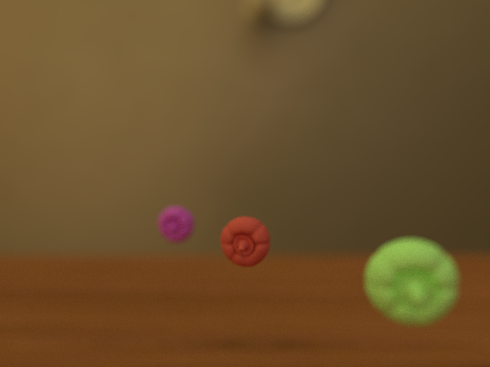
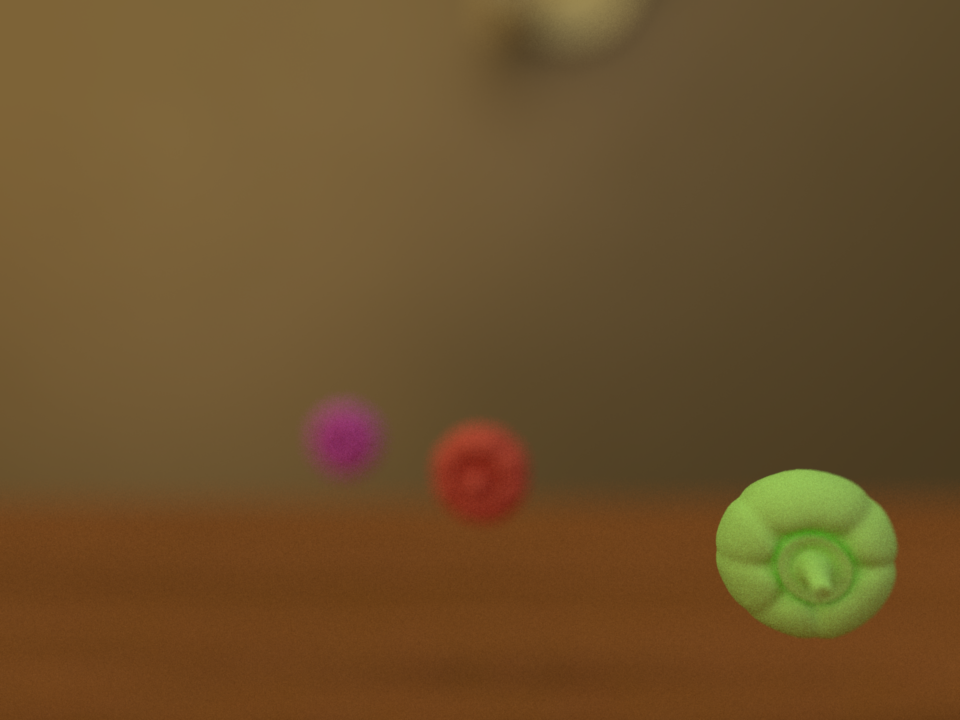
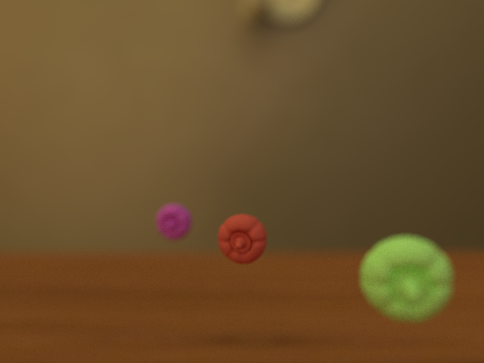
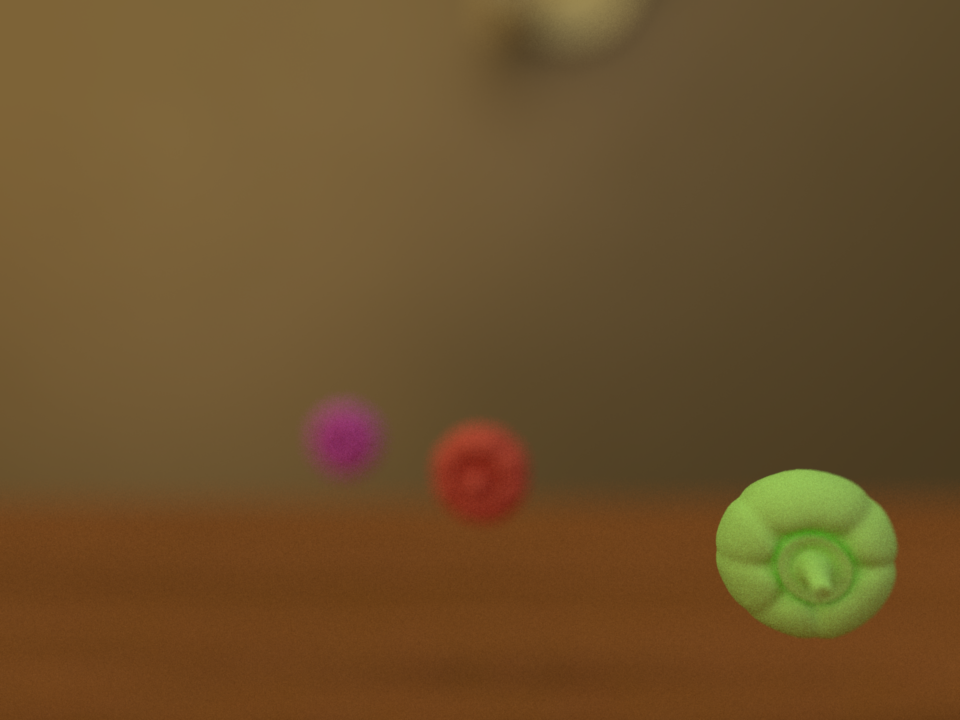

In this project we investigate a series of algorithms and effects used to render 3D virtual images. The two effects implemented are depth of field and envronment mapping
Depth of field
Depth of field is an effect that replicates a light artifact that happens due to the use of lenses. We can change the point of focus on the image and blur out specific points on the images depending on their depth from the camera.
 



Environment Mapping
Environment Mapping assumes that a light source at an infinite distance illuminates a scene. By changing this light source the image changes drastically on its mood and colour.


Final Project - Ovni Fun!
For our final project we used both depth of field and environment mapping on a scene we've called "Ovni Fun!" that tries to replicate the abduction of some cow toys from a kids point of view.